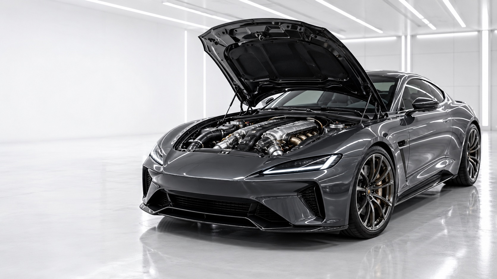
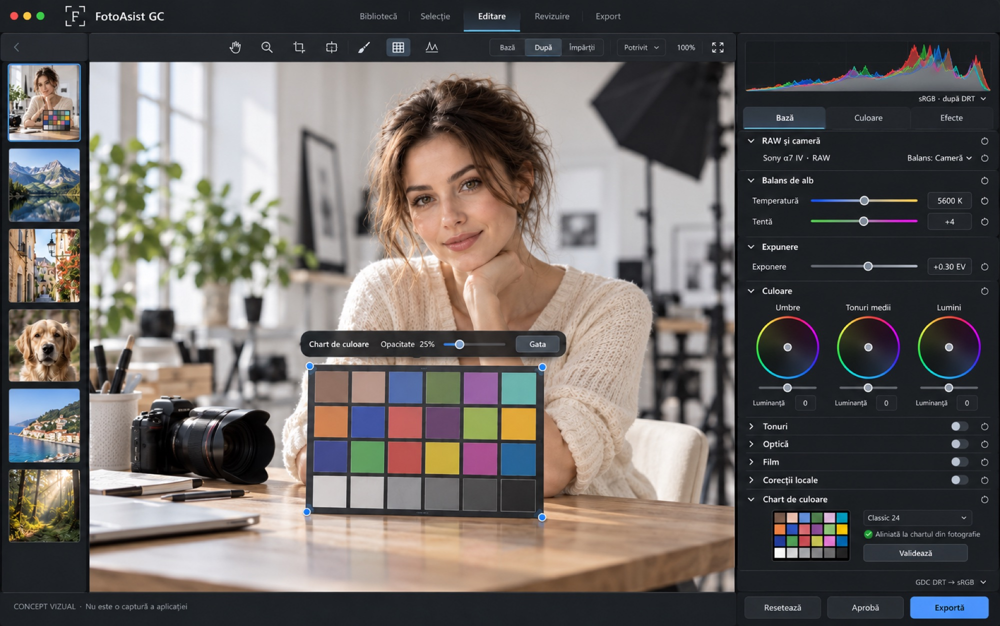
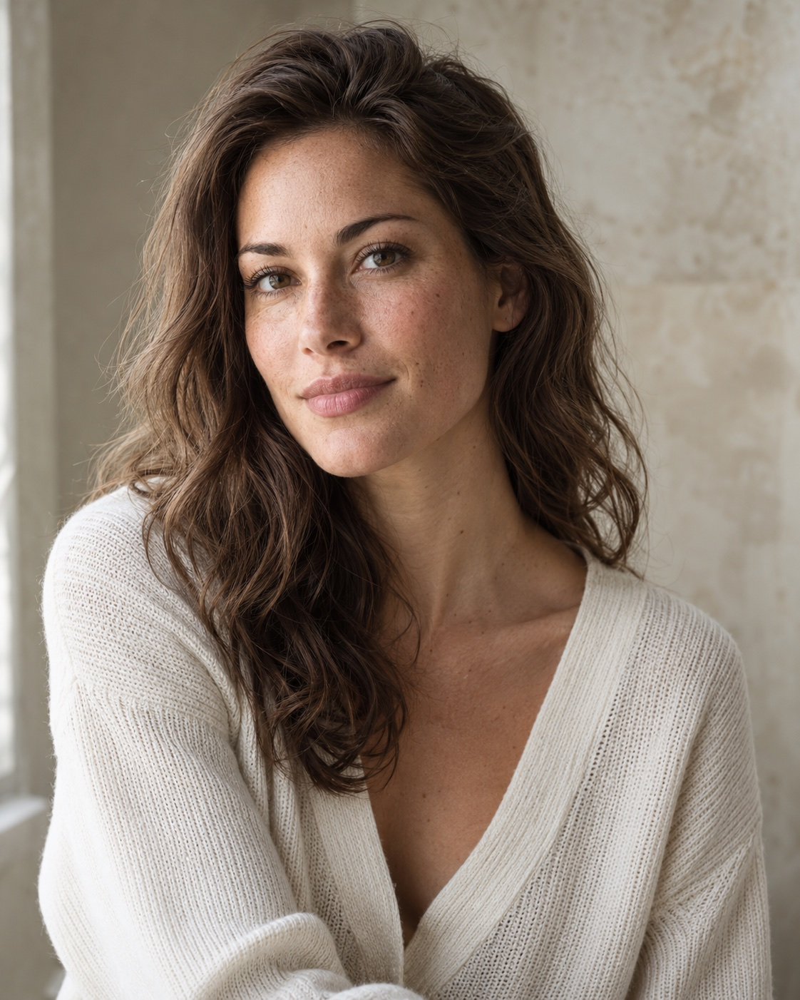
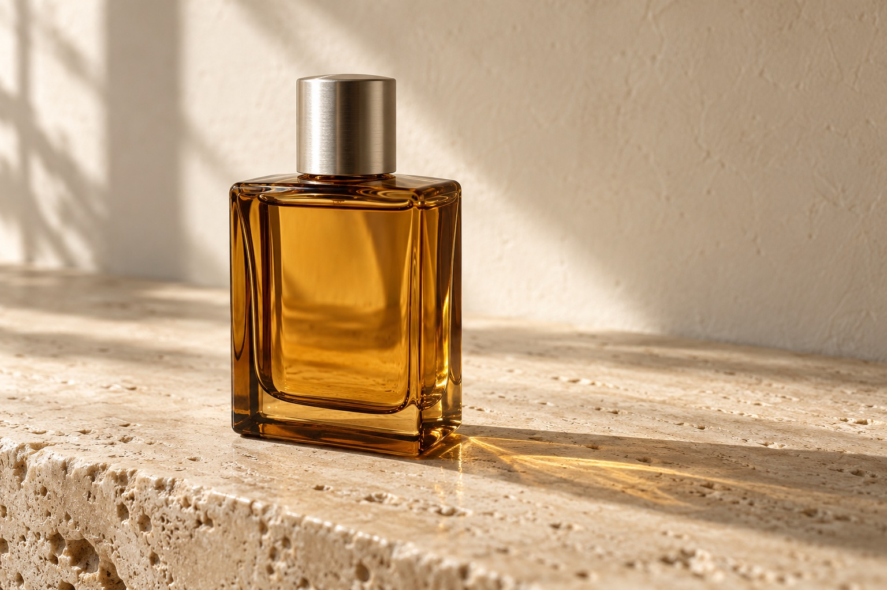

Todo empieza
con la fotografía.
La fuerza de un motor de color propio. La claridad de un espacio de trabajo donde eliges, editas y entregas a tu ritmo.

La potencia que ves.
La precisión que controlas.
FotoAsist tiene su propio motor de procesamiento. Toda la cadena, del RAW a la exportación, se ejecuta en local, sin ningún otro programa instalado.
Coche conceptual · metáfora visual, sin afirmaciones de rendimiento medido.Más cerca de la imagen.
Más claro en cada paso.
Una mirada a la aplicación. La fotografía ocupa el centro; las herramientas quedan a mano.

Un lugar para cada serie.
Fuentes y álbumes organizados, sin mover los originales. Colecciones virtuales para tu forma de trabajar.
Deja que la fotografía
hable.
Un retrato vive de la luz y la expresión. Un objeto, de la textura y los reflejos. Las herramientas deben dejar espacio a ambos.
Imágenes sintéticas de presentación, creadas por separado. No son archivos RAW y no demuestran resultados de antes/después.

Retrato / luz natural
Textura, matices y luz discreta.

Producto / detalle
Reflejos, transparencia y materiales.
Continúa en Resolve.
Cuando lo necesites.
La biblioteca, la selección, la edición y la exportación de FotoAsist funcionan con su propio motor, sin DaVinci Resolve. La máscara de sujeto se puede exportar como matte PNG e importar en Resolve como archivo.
La integración por nodos mediante el plugin OFX no forma parte de la edición de código abierto.
FotoAsist GC es un proyecto independiente. No está desarrollado, aprobado ni respaldado por Blackmagic Design. DaVinci Resolve es una marca de su propietario.Descarga FotoAsist GC.
FotoAsist GC es gratuito y de código abierto (GPL-3.0-or-later). No necesita cuenta, activación, periodo de prueba ni servidor de licencias: lo instalas y trabajas.
Descargar FotoAsist GC 1.0.0 para Mac ↓
Versión 1.0.0 · FotoAsistGC-1.0.0.pkg · instalador .pkg firmado y notarizado · 9,3 MB
SHA-256: f3b3ded376d202abf8d986a10f4fa82deee6ba55ad4d13a688aceab712b52b7a
¿Tienes una versión anterior (0.5–0.9)? Cierra la aplicación e instala la 1.0.0 encima; la biblioteca y las ediciones guardadas se conservan. Las fotografías editadas con versiones anteriores se renderizan en la 1.0.0 con la transformación de salida abierta, por lo que pueden verse distintas.
Requisitos de la versión 1.0.0
macOS 13 (Ventura) o posterior · Mac con Apple Silicon o Intel. La máscara de sujeto requiere macOS 14. La aplicación no necesita DaVinci Resolve.
Instalación
1. Descarga el paquete y ábrelo con doble clic.
2. Sigue los pasos del instalador (pide la contraseña de tu Mac).
3. Abre FotoAsist GC desde Aplicaciones y elige dónde guarda la aplicación su catálogo y sus miniaturas. Tus originales no se mueven.
Código abierto y contribuciones
El código fuente de esta versión es público: github.com/gordasgdc/fotoasist-gc. El proyecto está abierto a contribuciones mediante Issues y Pull Requests y tiene mantenimiento ocasional. El paquete de arriba se compila a partir del código etiquetado v1.0.0. La edición de código abierto no incluye GDC DRT, el color selectivo y la piel, la difusión y el bloom, la emulación fotoquímica de película, las bibliotecas de looks y de estilos de cine ni el plugin OFX.
Estado
La primera versión de código abierto. Puede haber límites y problemas; puedes comunicarlos en la página del proyecto.